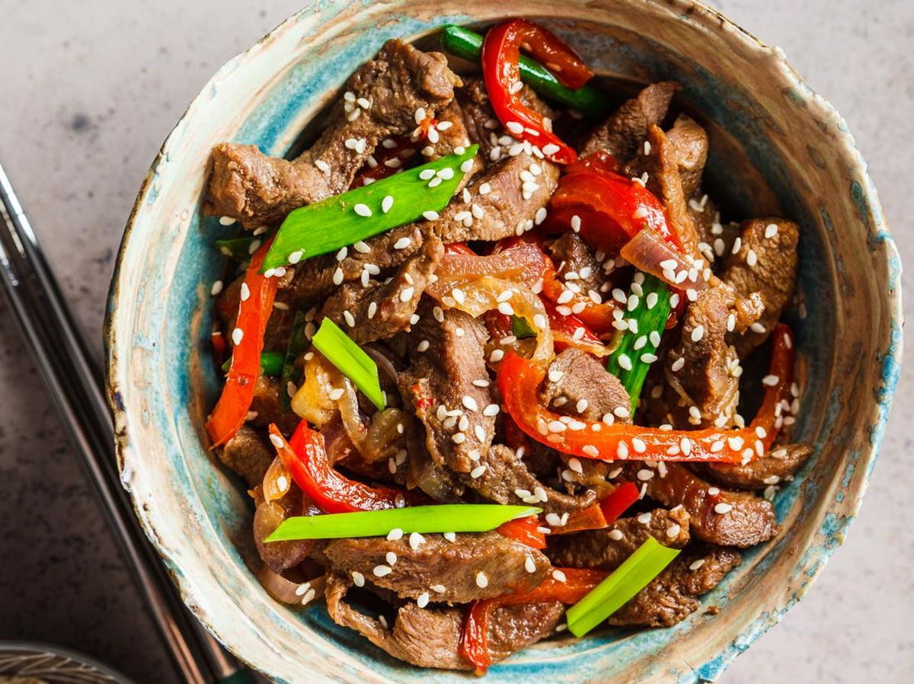

DAGING TERIYAKI

Bahan-bahan:
- 500g daging, iris tipis
- 1 buah paprika merah/ kuning, iris menurut selera
- 1 buah bawang bombai, iris bulat tipis
Bumbu marinasi:
- 5 btr bawang merah, haluskan
- 3 siung bawang putih, haluskan
- 1/2 ruas jari jahe, parut
- 4 sdm kecap asin
- 4 sdm kecap manis
- 2 sdm saus teriyaki/saus tiram
- 2 sdm minyak wijen
- 1 sdm madu
- 1 sdm mentega
Cara Memasak:
- Iris daging tipis memanjang, atau menurut selera. Kemudian marinasi dengan bumbu. Diamkan selama 15 menit.
- Tumis bawang bombai dengan mentega hingga wangi, masukkan paprika tumis kembali hingga wangi.
- Masukkan daging yg telah dimarinate tumis hingga daging berubah warna. Tutup wajan. Masak degan api kecil hingga daging empuk.